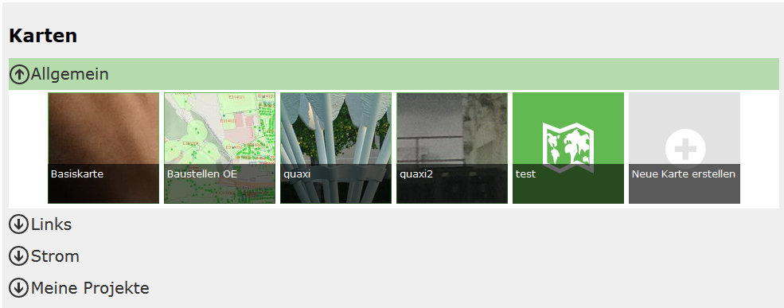

Voraussetzung¶
In diesem Dokument wird beschrieben, wie Karten, die für eine Portalseite erstellt wurden parametriert aufgerufen werden könne. Voraussetzung ist hier, dass eine Portalseite existiert, die Karten enthält.
Karten sind in einer Portalseite wie in einer Kartensammlung organisiert. Jede Karte hat einen Namen und ist einer Kategorie zugeordnet:
Der Aufruf einer Karte erfolgt immer über die Url:
https://{Host}/{Portal-Applikation}/{Portal-Seite}/{Kategorie}/{Kartenname}
Host |
Der Server, auf dem die Portal Applikation installiert ist |
Portal-Applikation |
Der Name der Portal Applikation im IIS |
Portal-Seite |
Die Url der Portalseite, wie sie vom Subscriber/Ersteller festgelegt wurde |
Kategorie |
Kategorie, in der sich die Karte befindet |
Kartenname |
Der Name der Karte |
Achtung: Beinhaltet der Kartenname oder die Kategorie Sonderzeichen, müssen diese für die Darstellung in der Url kodiert werden. Leerzeichen können mit %20 oder zur besseren lesbarkeit auch mit einer Tilde (~) angegeben werden. ZB. Plaung~und~Kataster
Will man beispielsweise die Basiskarte direkt aufrufen, lautet die Url:
https://{host}/{portal-applikation}/{portal-seite}/Allgemein/Basiskarte